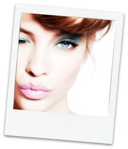

Makeup are products used to intensify the appearance of the body. Many of these cosmetics are created for use of applying to the face and hair.
They are generally concoction of synthetic compounds; some being derived from natural sources (such as coconut oil), and some being synthetics.
Common cosmetics include:
The history of cosmetics spans at least 6000 years and is present in almost every society on earth. Some argue that cosmetic body art was the earliest form of ritual in human culture, dating over 100,000 years ago from the African Middle Stone Age. The evidence for this comes in the form of utilised red mineral pigments (red ochre) including crayons associated with the emergence of Homo sapiens in Africa
Many makeup products have originated from different areas across the globe including:
| Country | Product |
|---|---|
| Egypt | Kohl Eyeliner |
| Middle East | Powders |
| China | Nail Varnish |
| Japan | Lipstick |
| Year | Location | Information |
|---|---|---|
| 500 BC | Egypt | Cleopatra used natural resources to improve their cosmetics using a hue tint of red. Red lipstick was only worn by Egyptian princesses |
| 400 AD | Greece | Laws regulating lipstick were estblished |
| 800 AD | Middle East | Cosmetologist Abu Al-Qasim Al-Zahwari developed solid molded sticks of colour |
| 1915 AD | United States of America | Coloured lipsticks were now available in tubes |
| 2015 AD | Worldwide | Lipstick is available world wide in over one thousand colours |
For more information: A Brief History of Lipstick
{kind=link}